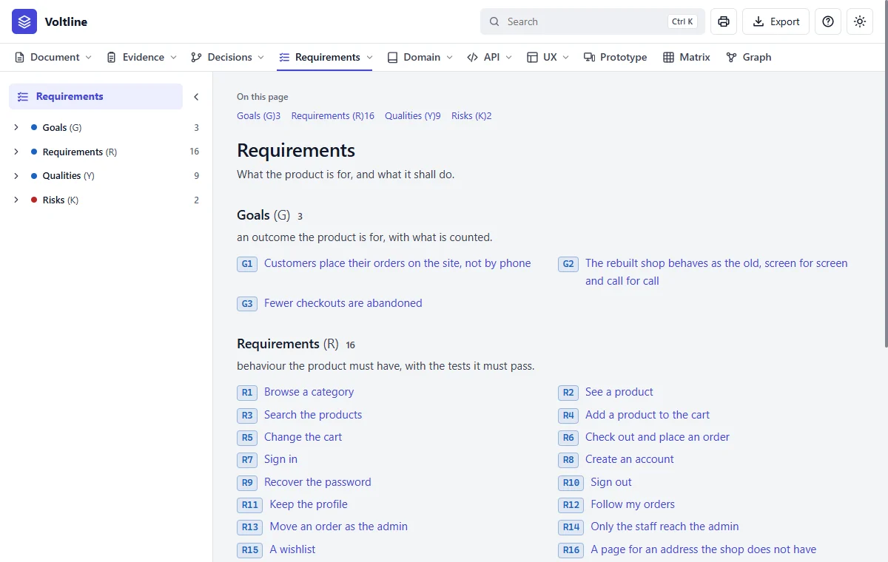
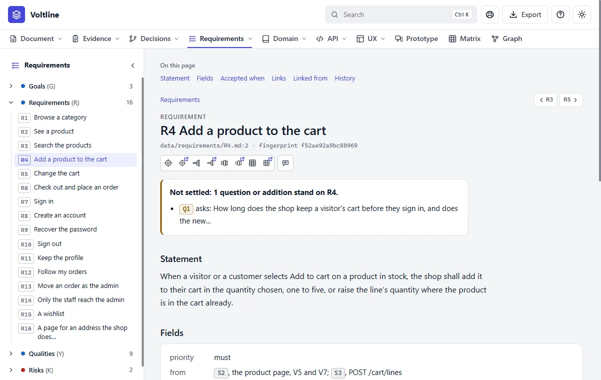
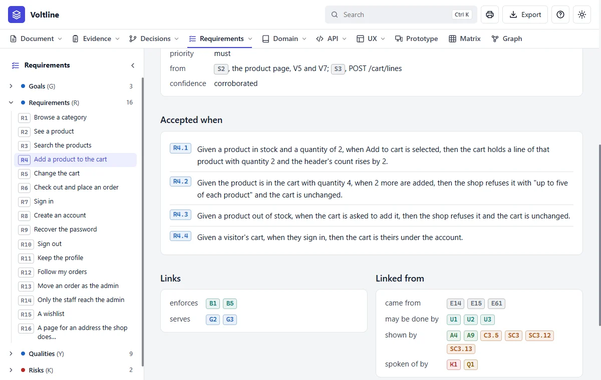

Part 3: Reading what you get
Requirements
In everyday termsThe promises. This is the heart of a specification: what the product must do, and how anyone can check it does. Everything else exists to support these.
What it answersWhat must the product do, how will we know, and why?
What's in it

- 1The tree. Each kind folds. The number is how many it holds.
- 2Goals (G). What the product is for, with what's counted.
- 3Requirements (R). Behaviour someone outside the product can observe.
- 4An ID. Click to open it. Pause to see its kind. Right click for its card.
| Kind | Letter | What it is | In Voltline |
|---|---|---|---|
| Goal | G | An outcome the product is for | 3 |
| Requirement | R | Behaviour the product must have, with the tests it must pass | 16 |
| Quality | Y | How well: speed, accessibility and the like, with numbers | 9 |
| Risk | K | What could go wrong, and what's done about it | 2 |
A requirement, part by part

- 1Where you are. The tree marks this node.
- 2On this page. Jumps to a section.
- 3Previous and next, in the tree's order.
- 4Around, Layers, Impact and Matrix. Each has a twin with a small arrow that opens another tab.
- 5Request a change. Leaves a note for Claude, and changes nothing yet.
- 6Not settled. What's open about this node.
- 7Statement. One testable sentence: the shop shall do this.
- 8Priority and from. How much it matters, and where it came from.

- 1Accepted when. Its criteria, as tests. Each has an ID of its own.
- 2R4.2 is the limit, as something you can check.
- 3Links. What this stands on.
- 4Linked from. What stands on this. It's the list a change would reach.
A requirement may also have Why, who needs it and what goes wrong without it, and Details, what it covers and what it doesn't. Both appear only where there's something to say. Rewording a Why turns nothing stale, but changing Details does.
Read it like this
- Read the Statement. Could someone outside the product check it?
- Read Accepted when. Each line is a test: given this, when that, then the other.
- Read Links to see what it stands on, then Linked from to see what shows it.
- Check confidence, under Fields. It's worked out from the findings, and you can't type it.
Mistakes people make
- Saying how. "The system shall use Redis" isn't a requirement. Say what someone outside can see.
- Skipping Linked from. It tells you what a change would reach before you make it.
- Two behaviours in one sentence. A statement with an and in the middle usually hides a second requirement.